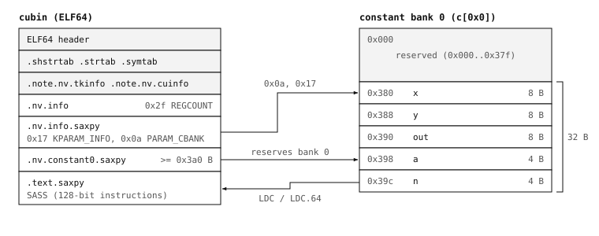
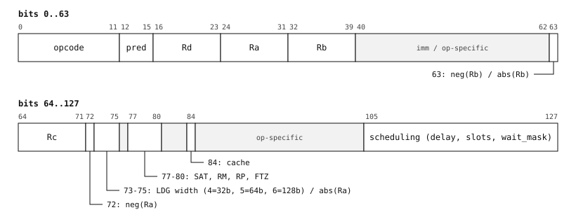
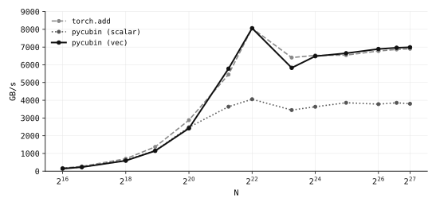

Compiling Python to SASS
Table of contents
Writing high-performance GPU kernels in Python has become standard practice. DSLs like Triton and NVIDIA's CuTeDSL let you write kernels in Python and compile them down to fast machine code.
Under the hood, however, these compilers rely on a massive stack, parts of which are closed-source:
$$ \text{Python AST} \longrightarrow \text{MLIR} \longrightarrow \text{LLVM / NVVM IR} \longrightarrow \text{PTX} \longrightarrow \texttt{ptxas} \longrightarrow \text{cubin} $$
Try peeking inside that pipeline on a CuTeDSL vector-add kernel with CUTE_DSL_KEEP=all and you only get the initial MLIR and the final PTX. Everything in between happens inside _cutlass_ir.so, a shared library stripped of debug symbols and helpful reverse engineering info that statically links to the different toolchains.
For vector add, that long compilation pipeline ultimately emits just 20 SASS instructions. This made me wonder: what does the GPU driver actually need to load and run a kernel? How do I control exactly what runs on the GPU? And can we skip the different stages entirely, compiling python straight to a cubin binary?
Exploring in that direction, we build pycubin. It's a minimal Python-to-SASS toy compiler with Blackwell (sm100) support.
from pycubin import DeviceArray, f32, gid, i32, jit, ptr_f32, synchronize
@jit
def saxpy(x: ptr_f32, y: ptr_f32, out: ptr_f32, a: f32, n: i32):
i = gid()
if i < n:
out[i] = a * x[i] + y[i]
grid = (n + 255) // 256
saxpy[grid](dx, dy, dout, 2.5, n)
synchronize()Note that the contents of this blog assume the reader has an amateur understanding of GPU programming and reverse engineering, plus tooling around them. To build pycubin, we need three things: the minimal ELF container the driver will accept, the binary encoding of Blackwell SASS instructions, and how to schedule them to run in a specific order.
Thanks to Verda for providing GPU compute used for some of the compiler verification work. I'm not affiliated with them in any way, but in my experience they are one of the best platforms for low-level optimization work and I've had a wonderful time working with them. Check them out!
Table of contents#
- Anatomy of a minimal cubin
- Reverse engineering Blackwell SASS
- Instruction scheduling
- Compiling Python to SASS
- Auto-vectorization and benchmarks
- Closing thoughts
- Additional reading
- Citation
Anatomy of a minimal cubin#
A cubin is an ELF file. Running readelf -S on the ptxas output for a simple kernel shows a lot of sections:
.shstrtab .strtab .symtab .debug_frame .note.nv.tkinfo .note.nv.cuinfo
.nv.info .nv.compat .nv.info.saxpy .nv.callgraph .rela.debug_frame
.text.saxpy .nv.shared.reserved.0 .nv.constant0.saxpy
.nv.capmerc.text.saxpy .nv.merc.* ...
Most of these sections have no public documentation so we have no concrete way of understanding what each does. However, we can use the CUDA driver (cuModuleLoadData) as an oracle to figure out the minimal important subset by dropping one section/record at a time, rebuilding the ELF, launching the kernel, and checking if the output still matches.
To do these steps, here's a minimal snippet that loads a cubin using cuModuleLoadData, launches a saxpy kernel on 1000 floats, and exits with 0 on correct output. Build with gcc -o run_saxpy run_saxpy.c -lcuda.
run_saxpy.c
#include <cuda.h>
#include <stdio.h>
#include <stdlib.h>
#define N 1000
#define CHECK(call) \
do { \
CUresult status = (call); \
if (status != CUDA_SUCCESS) { \
fprintf(stderr, "%s failed: %d\n", #call, status); \
exit(1); \
} \
} while (0)
int main(int argc, char **argv) {
FILE *file = fopen(argv[1], "rb");
static char cubin[1 << 20];
fread(cubin, 1, sizeof(cubin), file);
CUdevice device;
CUcontext context;
CUmodule module;
CUfunction kernel;
CHECK(cuInit(0));
CHECK(cuDeviceGet(&device, 0));
CHECK(cuDevicePrimaryCtxRetain(&context, device));
CHECK(cuCtxSetCurrent(context));
CHECK(cuModuleLoadData(&module, cubin));
CHECK(cuModuleGetFunction(&kernel, module, "saxpy"));
float x[N], y[N], out[N];
for (int i = 0; i < N; i++) {
x[i] = i;
y[i] = 1;
}
CUdeviceptr dx, dy, dout;
CHECK(cuMemAlloc(&dx, sizeof(x)));
CHECK(cuMemAlloc(&dy, sizeof(y)));
CHECK(cuMemAlloc(&dout, sizeof(out)));
CHECK(cuMemcpyHtoD(dx, x, sizeof(x)));
CHECK(cuMemcpyHtoD(dy, y, sizeof(y)));
CHECK(cuMemsetD8(dout, 0, sizeof(out)));
float a = 2.0f;
int n = N;
void *args[] = {&dx, &dy, &dout, &a, &n};
CHECK(cuLaunchKernel(kernel, 4, 1, 1, 256, 1, 1, 0, NULL, args, NULL));
CHECK(cuCtxSynchronize());
CHECK(cuMemcpyDtoH(out, dout, sizeof(out)));
for (int i = 0; i < N; i++) {
if (out[i] != a * x[i] + y[i]) {
fprintf(stderr, "wrong output at %d\n", i);
return 1;
}
}
return 0;
}Every section in an ELF file has a 64-byte header in a table. If we zero a header, the driver no longer sees that section (other sections remain unaffected). Below is a script that does the section-by-section removal, builds a cubin, and then checks if the output is still correct. If correct, it is likely that we wouldn't need that specific section/record when crafting a minimal cubin ourselves via the compiler.
Code
import struct
import subprocess
import sys
from collections import namedtuple
HEADER = struct.Struct("<IIQQQQIIQQ")
Section = namedtuple("Section", "name_offset type flags addr offset size link info align entsize")
def read_sections(cubin):
(table_offset,) = struct.unpack_from("<Q", cubin, 0x28)
count, names_index = struct.unpack_from("<HH", cubin, 0x3C)
sections = [Section(*HEADER.unpack_from(cubin, table_offset + i * HEADER.size)) for i in range(count)]
names = []
for section in sections:
start = sections[names_index].offset + section.name_offset
names.append(cubin[start : cubin.index(0, start)].decode())
return table_offset, sections, names
def remove_section(cubin, index):
table_offset, _, _ = read_sections(cubin)
start = table_offset + index * HEADER.size
return cubin[:start] + bytes(HEADER.size) + cubin[start + HEADER.size :]
def read_records(data):
records, i = [], 0
while i < len(data):
size = 4 + struct.unpack_from("<H", data, i + 2)[0] if data[i] == 4 else 4
records.append(data[i : i + size])
i += size
return records
def write_records(cubin, index, records):
table_offset, sections, _ = read_sections(cubin)
data = b"".join(records)
patched = bytearray(cubin)
patched[sections[index].offset : sections[index].offset + len(data)] = data
struct.pack_into("<Q", patched, table_offset + index * HEADER.size + 32, len(data))
return bytes(patched)
def kernel_runs_correctly(cubin):
with open("modified.cubin", "wb") as f:
f.write(cubin)
return subprocess.run(["./run_saxpy", "modified.cubin"], capture_output=True).returncode == 0
cubin = open(sys.argv[1], "rb").read()
_, _, names = read_sections(cubin)
for index, name in enumerate(names):
if index == 0:
continue
smaller = remove_section(cubin, index)
if kernel_runs_correctly(smaller):
cubin = smaller
print("removed", name)
else:
print("needed ", name)
_, sections, names = read_sections(cubin)
index = names.index(".nv.info.saxpy")
records = read_records(cubin[sections[index].offset :][: sections[index].size])
for record in list(records):
fewer = [r for r in records if r is not record]
smaller = write_records(cubin, index, fewer)
if kernel_runs_correctly(smaller):
cubin, records = smaller, fewer
print("removed record", hex(record[1]))
else:
print("needed record", hex(record[1]))Running it on the ptxas-generated cubin file:
needed .shstrtab
needed .strtab
needed .symtab
removed .debug_frame
needed .note.nv.tkinfo
needed .note.nv.cuinfo
removed .nv.info
removed .nv.compat
needed .nv.info.saxpy
removed .nv.callgraph
removed .rela.debug_frame
needed .text.saxpy
removed .nv.shared.reserved.0
needed .nv.constant0.saxpy
removed .nv.capmerc.text.saxpy
removed .nv.merc.debug_frame
removed .nv.merc.nv.info
removed .nv.merc.nv.info.saxpy
removed .nv.merc.nv.callgraph
removed .nv.merc.rela.debug_frame
removed .nv.merc.nv.shared.reserved.0
removed .nv.merc.symtab
removed record 0x66
removed record 0x37
needed record 0x17
needed record 0x17
needed record 0x17
needed record 0x17
needed record 0x17
removed record 0x50
removed record 0x1b
removed record 0x5f
removed record 0x4a
removed record 0x1c
removed record 0x10
removed record 0x19
needed record 0xa
removed record 0x36
removed record 0x6b
removed record 0x6d
Most of the file, such as the debug info, call graph, .nv.compat and all of the merc sections (.nv.merc.*, .nv.capmerc.*, short for Mercury, NVIDIA's intermediate binary format for forward compatibility), turns out to be optional. The rest is needed:
| Section | Failure |
|---|---|
.strtab, .symtab, .note.nv.tkinfo, .note.nv.cuinfo |
cuModuleLoadData rejects the file |
.shstrtab |
program crashes |
.text.saxpy |
driver can't find the kernel |
.nv.constant0.saxpy |
launch fails |
.nv.info.saxpy |
kernel runs but wrong output |
The first three rows are straightforward: .shstrtab, .strtab, and .symtab are standard ELF tables for section names, symbol names, and the kernel symbol itself; .note.nv.tkinfo and .note.nv.cuinfo are small NVIDIA metadata notes that cuModuleLoadData checks; and .text.saxpy holds the machine code.
The last two rows are used to describe how a kernel receives arguments. Before a launch, the driver copies the arguments into constant memory (a read-only memory space on the GPU), which is split into banks. A location is addressed by c[bank][offset]. Arguments fill the bank 0 starting at offset 0x380. The kernel reads them using the LDC instruction. For saxpy(x, y, out, a, n) the arguments look like this:
| Argument | Address | Size (in bytes) |
|---|---|---|
x |
c[0x0][0x380] |
8 |
y |
c[0x0][0x388] |
8 |
out |
c[0x0][0x390] |
8 |
a |
c[0x0][0x398] |
4 |
n |
c[0x0][0x39c] |
4 |
The cubin describes this info because the driver has no way of knowing this layout. Every kernel thus has a .nv.info.<kernel-name> section containing a sequence of binary records (what read_records parses above). Each record starts with two bytes: a format tag (data[0], where 4 means a variable-length record followed by a 2-byte payload length and payload bytes, while other values are fixed 4-byte records) and an attribute id (data[1]). ptxas writes 18 records for this kernel. The second part of the above output shows that only two attribute ids are needed for a minimal working cubin (we can read their names from cuobjdump --dump-elf):
0x17(EIATTR_KPARAM_INFO): one record per argument with its byte offset (relative to0x380) and size. Here these are0x0,0x8,0x10,0x18and0x1c.0x0a(EIATTR_PARAM_CBANK): where the arguments start (0x380) and how many bytes they take (32 in our example). It seems the driver rejects any other start than0x380.
As for .nv.constant0.saxpy, it reserves space for bank 0 in the cubin. The driver copies the argument values into it at launch. It must be at least the declared size (in this case, at least 0x380 + 32 = 0x3a0). A smaller size fails to launch, but larger seems to wrok fine. Lastly, notice the script printed removed .nv.info above: .nv.info holds an EIATTR_REGCOUNT (0x2f) record for the register count, and while this tiny kernel runs okay without it, larger kernels fail to launch if the count is too low, so we keep .nv.info anyway.

Reverse engineering Blackwell SASS#
The .text section holds the machine code (SASS). NVIDIA doesn't really document how instructions are encoded on Blackwell so we need to reverse engineer this. We can use another oracle-based approach as we have ptxas to produce real instruction encodings, and nvdisasm to change it back to assembly.
To have something to work with, let's use the following PTX kernel:
.version 9.0
.target sm_100a
.address_size 64
.visible .entry k(.param .u64 p)
{
.reg .f32 %f<4>;
.reg .b64 %rd<2>;
ld.param.u64 %rd0, [p];
ld.global.f32 %f0, [%rd0];
ld.global.f32 %f1, [%rd0+4];
sub.f32 %f2, %f1, %f0;
st.global.f32 [%rd0], %f2;
ret;
}It reads two floats from a pointer p and writes p[1] - p[0] into p[0]. The ptxas output for this is:
LDC R1, c[0x0][0x37c]
LDC.64 R2, c[0x0][0x380]
LDCU.64 UR4, c[0x0][0x358]
LDG.E R0, desc[UR4][R2.64]
LDG.E R5, desc[UR4][R2.64+0x4]
FADD R5, -R0, R5
STG.E desc[UR4][R2.64], R5
EXITExplanation: the CUDA driver pre-populates a few internal slots in constant bank 0 before 0x380. LDC reads the stack pointer from 0x37c into R1, and LDCU.64 reads a global memory descriptor (a 64-bit descriptor that Blackwell's LDG/STG instructions require alongside the pointer for cache and memory-space attributes) from 0x358 into UR4 (the U is for uniform, a register that holds one value for the whole warp). LDC.64 loads the pointer p from the arguments at 0x380 into the register pair R2:R3 (notice how the later loads and stores address memory as R2.64; each register is 32-bits, so R2.64 refers to the register pair R2:R3). LDG and STG load and store 32 bits using the pointer address in R2:R3. FADD R5, -R0, R5 computes R5 - R0. EXIT marks the end of the kernel.
To understand how instructions are encoded, let's take FADD and modify each of its 128 bits, one at a time, and see what nvdisasm makes of it.
Code for bit-flipping
import re
import struct
import subprocess
import tempfile
from concurrent.futures import ThreadPoolExecutor
PTX = """
.version 9.0
.target sm_100a
.address_size 64
.visible .entry k(.param .u64 p)
{
.reg .f32 %f<4>;
.reg .b64 %rd<2>;
ld.param.u64 %rd0, [p];
ld.global.f32 %f0, [%rd0];
ld.global.f32 %f1, [%rd0+4];
sub.f32 %f2, %f1, %f0;
st.global.f32 [%rd0], %f2;
ret;
}
"""
def compile_ptx(ptx):
with tempfile.TemporaryDirectory() as tmp:
with open(f"{tmp}/k.ptx", "w") as f:
f.write(ptx)
subprocess.run(["ptxas", "-arch=sm_100a", f"{tmp}/k.ptx", "-o", f"{tmp}/k.cubin"], check=True)
with open(f"{tmp}/k.cubin", "rb") as f:
return f.read()
def text_offset(cubin):
(shoff,) = struct.unpack_from("<Q", cubin, 0x28)
shnum, shstrndx = struct.unpack_from("<HH", cubin, 0x3C)
headers = [struct.unpack_from("<IIQQQQIIQQ", cubin, shoff + 64 * i) for i in range(shnum)]
names = headers[shstrndx][4]
for header in headers:
start = names + header[0]
if cubin[start : cubin.index(0, start)].startswith(b".text."):
return header[4]
def disassemble(cubin):
with tempfile.NamedTemporaryFile(suffix=".cubin") as f:
f.write(cubin)
f.flush()
out = subprocess.run(["nvdisasm", "-c", f.name], capture_output=True, text=True).stdout
return {int(addr, 16): text for addr, text in re.findall(r"/\*([0-9a-f]{4})\*/\s+(.*?)\s*;", out)}
def read_word(cubin, pos):
return int.from_bytes(cubin[pos : pos + 16], "little")
def write_word(cubin, pos, word):
patched = bytearray(cubin)
patched[pos : pos + 16] = word.to_bytes(16, "little")
return bytes(patched)
cubin = compile_ptx(PTX)
addr = 0x50
pos = text_offset(cubin) + addr
word = read_word(cubin, pos)
original = disassemble(cubin)[addr]
def flip(bit):
return disassemble(write_word(cubin, pos, word ^ (1 << bit))).get(addr, "ILLEGAL")
with ThreadPoolExecutor(32) as pool:
flipped = list(pool.map(flip, range(128)))
print(f"{word:032x} {original}")
for bit, text in enumerate(flipped):
if text != original:
print(f"bit {bit:3}: {text}")This FADD encodes as 004fca00000001000000000500057221 (128 bits written MSB-first, so bit 0 is on the right). The following is the bit-flipping output:
bit 0: FMUL.INVALID0 R5, -R0, R5
bit 1: FFMA R5, -R0, R5, R0
bit 3: DADD R5, -R0, R0
bit 5: ILLEGAL
...
bit 12: @P6 FADD R5, -R0, R5
bit 15: @!PT FADD R5, -R0, R5
bit 16: FADD R4, -R0, R5
bit 17: FADD R7, -R0, R5
bit 18: FADD R1, -R0, R5
...
bit 24: FADD R5, -R1, R5
bit 25: FADD R5, -R2, R5
...
bit 32: FADD R5, -R0, R4
bit 33: FADD R5, -R0, R7
...
bit 62: FADD R5, -R0, |R5|
bit 63: FADD R5, -R0, -R5
bit 72: FADD R5, R0, R5
bit 73: FADD R5, -|R0|, R5
bit 77: FADD.SAT R5, -R0, R5
bit 78: FADD.RM R5, -R0, R5
bit 79: FADD.RP R5, -R0, R5
bit 80: FADD.FTZ R5, -R0, R5
Many things become quite obvious:
- Bits 0-11 are the opcode. Flipping them is either illegal or resolves to a different instruction.
- Bits 12-15 are the predicate guard: bits 12-14 select the predicate register (
0..6forP0..P6,7for always-truePT, so flipping bit 12 turns7into6=@P6), and bit 15 negates it (@!PT). - Bits 16-23 are the destination register. Flipping the lowest bit turns
R5intoR4for example. - Bits 24-31 and 32-39 are the two source registers.
- Bits 62 and 63 are
|abs|and-negon the second source; bits 72 and 73 are-negand|abs|(in reverse order) on the first. - Bits 77-80 are the modifiers
.SAT,.RM,.RPand.FTZ(read PTX docs in case you don't know what these modifiers do).
The same experiment on a load instruction (LDG.E R0, desc[UR4][R2.64]) shows the width of the access:
bit 73: LDG.E.64 R0, desc[UR4][R2.64]
bit 74: LDG.E.128 R0, desc[UR4][R2.64]
bit 75: LDG.E.U8 R0, desc[UR4][R2.64]
Bits 73-75 together are a 3-bit field. The 32-bit load has the value 4, flipping bit 73 makes it 5 (64-bit), bit 74 makes it 6 (128-bit), and bit 75 makes it 0 (8-bit). We will need the 128-bit one later for vectorization.

Unless we do this for multiple different types of instructions, it's hard to learn what every bit does. Fortunately, it seems we don't need to fully understand the role of each bit to do SASS codegen or cubin encoding. For each instruction we plan to use, we can take one encoded 128-bit word from ptxas as a template and overwrite the register, modifier, and constant bits. This, obviously, assumes that there are no unintended side effects (there is a very high chance there could be, since our investigation is quite naive).
Instruction scheduling#
In the bit-flipping experiment above, bits 105-127 don't change the nvdisasm output. ptxas still writes different values there for almost every instruction, therefore those bits are clearly doing something. We just don't know what yet.
Unlike out-of-order CPUs, NVIDIA GPUs don't resolve register hazards automatically in hardware, so the compiler has to encode when it's safe to issue. It turns out those upper 23 bits carry that scheduling info.
Since nvdisasm ignores them, we can't use it as an oracle here. Instead, we can patch bits of a cubin directly, run the kernel on the GPU, and check the output correctness. Let's use a kernel that loads a float x, adds 1.0, squares it, and stores (x + 1)^2. This gives us a global load feeding a FADD that then feeds a FMUL. We test load and arithmetic dependencies using this approach.
Code for probing scheduling bits
import ctypes
import re
import struct
import subprocess
import tempfile
PTX = """
.version 9.0
.target sm_100a
.address_size 64
.visible .entry k(.param .u64 p)
{
.reg .f32 %f<4>;
.reg .b64 %rd<2>;
ld.param.u64 %rd0, [p];
ld.global.f32 %f0, [%rd0];
add.f32 %f1, %f0, 0f3F800000;
mul.f32 %f2, %f1, %f1;
st.global.f32 [%rd0+4], %f2;
ret;
}
"""
cuda = ctypes.CDLL("libcuda.so.1")
def check(status):
assert status == 0, f"CUDA error {status}"
def init_cuda():
check(cuda.cuInit(0))
device = ctypes.c_int()
ctx = ctypes.c_void_p()
check(cuda.cuDeviceGet(ctypes.byref(device), 0))
check(cuda.cuDevicePrimaryCtxRetain(ctypes.byref(ctx), device))
check(cuda.cuCtxSetCurrent(ctx))
def compile_ptx(ptx):
with tempfile.TemporaryDirectory() as tmp:
with open(f"{tmp}/k.ptx", "w") as f:
f.write(ptx)
subprocess.run(["ptxas", "-arch=sm_100a", f"{tmp}/k.ptx", "-o", f"{tmp}/k.cubin"], check=True)
with open(f"{tmp}/k.cubin", "rb") as f:
return f.read()
def text_offset(cubin):
(shoff,) = struct.unpack_from("<Q", cubin, 0x28)
shnum, shstrndx = struct.unpack_from("<HH", cubin, 0x3C)
headers = [struct.unpack_from("<IIQQQQIIQQ", cubin, shoff + 64 * i) for i in range(shnum)]
names = headers[shstrndx][4]
for header in headers:
start = names + header[0]
if cubin[start : cubin.index(0, start)].startswith(b".text."):
return header[4]
def disassemble(cubin):
with tempfile.NamedTemporaryFile(suffix=".cubin") as f:
f.write(cubin)
f.flush()
out = subprocess.run(["nvdisasm", "-c", f.name], capture_output=True, text=True).stdout
return {int(addr, 16): text for addr, text in re.findall(r"/\*([0-9a-f]{4})\*/\s+(.*?)\s*;", out)}
def read_word(cubin, pos):
return int.from_bytes(cubin[pos : pos + 16], "little")
def write_word(cubin, pos, word):
patched = bytearray(cubin)
patched[pos : pos + 16] = word.to_bytes(16, "little")
return bytes(patched)
def get_bits(word, start, width):
mask = (1 << width) - 1
return (word >> start) & mask
def set_bits(cubin, pos, start, width, value):
word = read_word(cubin, pos)
mask = ((1 << width) - 1) << start
word = (word & ~mask) | (value << start)
return write_word(cubin, pos, word)
def run_kernel(cubin, x):
module = ctypes.c_void_p()
kernel = ctypes.c_void_p()
image = ctypes.create_string_buffer(cubin, len(cubin))
check(cuda.cuModuleLoadData(ctypes.byref(module), image))
check(cuda.cuModuleGetFunction(ctypes.byref(kernel), module, b"k"))
buf = ctypes.c_uint64()
check(cuda.cuMemAlloc_v2(ctypes.byref(buf), 8))
data = (ctypes.c_float * 2)(x, 0.0)
check(cuda.cuMemcpyHtoD_v2(buf, data, 8))
args = (ctypes.c_void_p * 1)(ctypes.cast(ctypes.byref(buf), ctypes.c_void_p))
check(cuda.cuLaunchKernel(kernel, 1, 1, 1, 1, 1, 1, 0, None, args, None))
check(cuda.cuMemcpyDtoH_v2(data, buf, 8))
check(cuda.cuMemFree_v2(buf))
check(cuda.cuModuleUnload(module))
return data[1]
def check_kernel(cubin):
for x in (3.0, 5.0, 7.0):
if run_kernel(cubin, x) != (x + 1.0) ** 2:
return False
return True
init_cuda()
cubin = compile_ptx(PTX)
base = text_offset(cubin)
instructions = list(disassemble(cubin).items())[:8]
for addr, text in instructions:
word = read_word(cubin, base + addr)
print(f"{text:34} {word >> 105:023b}")
print()
ldg_pos = base + 0x30
fadd_pos = base + 0x40
for bit in range(105, 128):
word = read_word(cubin, fadd_pos)
if not check_kernel(write_word(cubin, fadd_pos, word ^ (1 << bit))):
print("fadd flip fail", bit)
print()
for val in range(8):
print("ldg slot", val, check_kernel(set_bits(cubin, ldg_pos, 110, 3, val)))
patched = set_bits(cubin, ldg_pos, 110, 3, 5)
patched = set_bits(patched, fadd_pos, 116, 6, 1 << 5)
print("ldg slot 5 + wait 5", check_kernel(patched))
print()
for val in range(16):
print("fadd delay", val, check_kernel(set_bits(cubin, fadd_pos, 105, 4, val)))
print()
for addr, text in instructions:
word = read_word(cubin, base + addr)
delay = get_bits(word, 105, 4)
b109 = get_bits(word, 109, 1)
out_slot = get_bits(word, 110, 3)
in_slot = get_bits(word, 113, 3)
wait_mask = get_bits(word, 116, 6)
print(f"{text:34} {delay:2} {b109} {out_slot} {in_slot} {wait_mask:06b}")Output:
LDC R1, c[0x0][0x37c] 00000000000011111111000
LDC.64 R2, c[0x0][0x380] 00000000000011100010001
LDCU.64 UR4, c[0x0][0x358] 00000000000011100010010
LDG.E R0, desc[UR4][R2.64] 00000000000111101010010
FADD R0, R0, 1 00000000010011111100100
FMUL R5, R0, R0 00000000000011111100101
STG.E desc[UR4][R2.64+0x4], R5 00000000000011111110001
EXIT 00000000000011111110101
fadd flip fail 118
ldg slot 0 False
ldg slot 1 False
ldg slot 2 True
ldg slot 3 False
ldg slot 4 False
ldg slot 5 False
ldg slot 6 False
ldg slot 7 False
ldg slot 5 + wait 5 True
fadd delay 0 True
fadd delay 1 False
fadd delay 2 False
fadd delay 3 False
fadd delay 4 True
fadd delay 5 True
fadd delay 6 True
fadd delay 7 True
fadd delay 8 True
fadd delay 9 True
fadd delay 10 True
fadd delay 11 True
fadd delay 12 True
fadd delay 13 True
fadd delay 14 True
fadd delay 15 True
LDC R1, c[0x0][0x37c] 8 1 7 7 000000
LDC.64 R2, c[0x0][0x380] 1 1 0 7 000000
LDCU.64 UR4, c[0x0][0x358] 2 1 0 7 000000
LDG.E R0, desc[UR4][R2.64] 2 1 2 7 000001
FADD R0, R0, 1 4 0 7 7 000100
FMUL R5, R0, R0 5 0 7 7 000000
STG.E desc[UR4][R2.64+0x4], R5 1 1 7 7 000000
EXIT 5 1 7 7 000000
Here are bits 105-127 for each instruction (bit 127 on the left):
LDC R1, c[0x0][0x37c] 00000000000011111111000
LDC.64 R2, c[0x0][0x380] 00000000000011100010001
LDCU.64 UR4, c[0x0][0x358] 00000000000011100010010
LDG.E R0, desc[UR4][R2.64] 00000000000111101010010
FADD R0, R0, 1 00000000010011111100100
FMUL R5, R0, R0 00000000000011111100101
STG.E desc[UR4][R2.64+0x4], R5 00000000000011111110001
EXIT 00000000000011111110101
Flipping bits 105-127 on FADD one at a time breaks the kernel on bit 118. In the binary table above, FADD is the only instruction with bit 118 set. It is also the instruction that reads the value from LDG.
If you line up the bits across the loads and their consumers, a pattern shows up:
LDC.64andLDCU.64have bits 110-112 set to000(0).LDGuses their output and has bit 116 (116 + 0) set.LDGhas bits 110-112 set to010(2).FADDuses its output and has bit 118 (116 + 2) set.
Because loads take an unpredictable number of cycles, the hardware tracks them using numbered dependency slots. Multiple loads can share the same slot (like LDC.64 and LDCU.64 both using slot 0), and waiting on that slot waits for all of them to finish. Bits 110-112 look like the slot number a load signals when it finishes, and bits 116-121 look like a bitmask of slots to wait on before running. If that's right, changing bits 110-112 on LDG to anything other than 2 should break the kernel unless we update FADD's wait mask to match:
ldg slot 0 False
ldg slot 1 False
ldg slot 2 True
ldg slot 3 False
ldg slot 4 False
ldg slot 5 False
ldg slot 6 False
ldg slot 7 False
ldg slot 5 + wait 5 True
Only 2 passes on its own because FADD is waiting on slot 2 (bit 118). Moving both LDG and FADD to 5 passes too. Any other value makes FADD read R0 before the load finishes. We'll call bits 110-112 out_slot (7 means none) and bits 116-121 wait_mask.
FADD has out_slot = 7, so FMUL isn't waiting on a slot for it. Looking at the low four bits (105-108), FADD has 0100 (4) and FMUL has 0101 (5). Sweeping bits 105-108 on FADD from 0 to 15 gives:
fadd delay 0 True
fadd delay 1 False
fadd delay 2 False
fadd delay 3 False
fadd delay 4 True
...
fadd delay 15 True
For 1, 2, and 3, FMUL runs too early and reads the old value in R0. From 4 up it works. So bits 105-108 seem to be a cycle delay before issuing the next instruction, which we can call delay. (0 also passes here for reasons I don't understand, so let's do what all sane people would do and investigate avoid it.)
Here are the fields:
delay(bits 105-108): cycles to wait before issuing the next instruction.b109(bit 109):ptxassets this to 0 or 1 depending on the instruction. Flipping it onFADDdoesn't seem to change anything.out_slot(bits 110-112): slot number signaled when a load finishes writing its output (7means none).in_slot(bits 113-115): stays7in this small kernel, so the probe above doesn't exercise it. On larger kernels that reuse an address register across back-to-back loads or stores, leaving bits 113-115 at7gave wrong outputs because the memory unit reads its input registers asynchronously after issue; assigning a slot here lets a later writer wait until the load or store has finished reading its inputs.wait_mask(bits 116-121): 6-bit mask of slots to wait on before running, printed MSB-first below (bit 5 on the left, bit 0 on the right). (Bits 122-127 are always0in our tests, so we leave them0.)
Decoded for the same kernel:
instruction delay b109 out_slot in_slot wait_mask
LDC R1, c[0x0][0x37c] 8 1 7 7 000000
LDC.64 R2, c[0x0][0x380] 1 1 0 7 000000
LDCU.64 UR4, c[0x0][0x358] 2 1 0 7 000000
LDG.E R0, desc[UR4][R2.64] 2 1 2 7 000001
FADD R0, R0, 1 4 0 7 7 000100
FMUL R5, R0, R0 5 0 7 7 000000
STG.E desc[UR4][R2.64+0x4], R5 1 1 7 7 000000
EXIT 5 1 7 7 000000
I ran the delay sweep on every pair of ALU instructions the compiler supports. Most pairs need 4 cycles, although a few (like FMUL -> I2F) need 5. Our toy compiler just uses 5 for all of them to be safe lazily. Predicates are slower: a predicate feeding a branch needs a delay of 13 cycles (anything under 13 gives wrong results).
Compiling Python to SASS#
Now we have enough to put the compiler together. It lowers Python's AST directly to a list of SASS instructions, then runs a scheduling pass and a label-patching pass to produce the final bytes. We don't use an IR (intermediate representation) for the simplistic nature of this toy project.
Let's trace what it does on saxpy from the intro (with the default block size of 256 threads):
@jit
def saxpy(x: ptr_f32, y: ptr_f32, out: ptr_f32, a: f32, n: i32):
i = gid()
if i < n:
out[i] = a * x[i] + y[i]First, the type annotations tell us the constant-bank layout starting at c[0x0][0x380] (each pointer is 8 bytes aligned to 8, each scalar is 4 bytes). Next, as the compiler walks the body, it assigns registers with a bump counter: local variables and parameters keep their register, while expression temporaries go back onto a free list at the end of each statement. 64-bit pointer pairs align to even registers and 128-bit vector loads align to multiples of 4, because hardware wide-memory instructions require aligned register tuples. There is no support for register spilling; if a kernel runs out of registers, womp womp: compilation fails.
Parameters, constants, and gid() are loaded lazily into a prologue the first time the body mentions them, so unused arguments aren't loaded and constants are only materialized once (zero just uses RZ, register 255). Since our kernels don't use a stack, we don't need the LDC R1, c[0x0][0x37c] stack setup that ptxas emitted earlier, so R1 is free for gid().
For the body out[i] = a * x[i] + y[i], each operation picks a 128-bit instruction template we grabbed from ptxas and overwrites the register, immediate, and scheduling bits (running the same bit-flip script on IMAD, ISETP, LDC, STG, BSSY, and BRA gave us the bit offsets for immediates, constant-bank addresses, and branch targets). For example, the float multiply-add fuses into FFMA R13, R6, R7, R12:
template: 00000000000000000000000809097223 (FFMA R9, R9, R8, R0)
encoded : 010fe2000000000c00000007060d7223 (FFMA R13, R6, R7, R12)
In the encoded word, 7223 is the FFMA opcode plus PT (7), 0d is R13 (destination), 06 and 07 are R6 and R7, 0c at bits 64-71 is R12, and the top 23 bits (inside 010fe2) hold the scheduling bits (delay = 1, b109 = 0, out_slot = 7, in_slot = 7, wait_mask = 010000).
For control flow, modern NVIDIA GPUs allow lanes within a 32-thread warp to diverge independently, so the compiler has to tell the hardware where diverging lanes should reconverge. For an if, BSSY records that reconvergence point in a hardware convergence barrier register B0, @!P0 BRA jumps past the body for lanes where the condition is false, and BSYNC waits for all lanes to meet back up. Loops (for, while) use the same BSSY/BSYNC pair around the loop body with a backward BRA to the loop header. Since instructions are emitted before we know where a block ends, branches hold a symbolic label. After scheduling, a final pass computes the signed relative offset delta = target - (i + 1) and patches it into BSSY (in bytes, delta * 16) and BRA (in 32-bit words, delta * 4), since each instruction is 16 bytes (four 32-bit words).
Once the instruction list is built, a single forward pass fills in the scheduling bits:
- Fixed-latency ALU ops record when their output register will be ready (5 cycles later, or 13 cycles when a predicate feeds a branch). Delays accumulate across intervening instructions, so when a later instruction uses that register, the immediately preceding instruction's
delayis bumped to cover whatever cycles remain. - Variable-latency ops grab one of the 6 dependency slots (
0..5). Because the slot numbers are interchangeable (as the slot-5 probe showed),pycubinuses a simple fixed convention:LDGalways uses slot4, other loads (LDC,S2R) rotate through slots0..3, and memory ops setin_slot = 5to protect their address registers. Any later instruction that touches a pending register sets that slot's bit inwait_mask. - Branches and the instruction right before a branch target get a conservative
delay = 15, and the first instruction at a merge label waits on all 6 slots (111111).
Here is the full saxpy kernel pycubin emits:
instruction delay out in wait
LDCU.64 UR4, c[0x0][0x358] 1 0 7 000000
S2R R2, SR_CTAID.X 1 1 7 000000
IMAD.MOV.U32 R3, RZ, RZ, 0x100 1 7 7 000000
S2R R4, SR_TID.X 5 2 7 000000
IMAD R1, R2, R3, R4 1 7 7 000110
LDC R5, c[0x0][0x39c] 1 3 7 000000
LDC R6, c[0x0][0x398] 1 0 7 000000
LDC.64 R8, c[0x0][0x380] 1 1 7 000000
LDC.64 R14, c[0x0][0x388] 1 2 7 000000
LDC.64 R18, c[0x0][0x390] 1 3 7 000000
IADD3 R0, PT, PT, R1, RZ, RZ 5 7 7 000000
ISETP.LT.AND P0, PT, R0, R5, PT 1 7 7 001000
BSSY.RECONVERGENT B0, `(.L_x_0) 12 7 7 000000
@!P0 BRA `(.L_x_0) 15 7 7 000000
IMAD.WIDE R10, R0, 0x4, R8 5 7 7 000010
LDG.E R7, desc[UR4][R10.64] 1 4 5 000001
IMAD.WIDE R16, R0, 0x4, R14 5 7 7 000100
LDG.E R12, desc[UR4][R16.64] 5 4 5 000000
FFMA R13, R6, R7, R12 1 7 7 010000
IMAD.WIDE R20, R0, 0x4, R18 5 7 7 000000
STG.E desc[UR4][R20.64], R13 15 7 5 000000
BSYNC.RECONVERGENT B0 1 7 7 111111
EXIT 1 7 7 000000
A few things to notice in that table:
S2R(special-register read) loads the block index intoR2(slot1) and thread index intoR4(slot2),IMAD.MOV.U32loads0x100 = 256intoR3, andIMAD R1, R2, R3, R4(blockIdx * 256 + threadIdx) waits on000110.LDC.64 R8,R14, andR18jump around in register numbers because they were added to the prologue lazily as the body walkedx[i],y[i], andout[i].IADD3(SASS's 3-input integer add, here addingRZtwice as a register copy; thePToperands are unused predicate slots) movesR1intoi(R0).ISETP.LT.ANDwaits on slot3(ninR5) and writesR0 < R5to predicateP0(itsPToperands are the unused inverted output and always-true input predicates). ThenISETP(delay = 1) plusBSSY(delay = 12) gives the 13 cyclesP0needs before@!P0 BRA.IMAD.WIDEcomputes each 64-bit byte address (i * 4 + base, using register pairs likeR8:R9andR10:R11) and delays 5 cycles beforeLDG.E. Both loads signal slot4, andFFMAwaits on010000.BSYNCsits at.L_x_0and waits on111111.
These 23 instructions, wrapped with the minimal ELF sections from earlier, can be passed to cuModuleLoadData, and launched with cuLaunchKernel! No NVCC, PTXAS, or LLVM anywhere!
Auto-vectorization and benchmarks#
A B200 has ~8 TB/s of HBM3e bandwidth, yet a scalar vector add (out[i] = x[i] + y[i]) using 4-byte LDG.E / STG.E instructions only reaches ~3.8 TB/s, roughly half of peak.
Earlier we found that bits 73-75 on LDG.E set the access width (4 for 32-bit, 6 for 128-bit). When a kernel has the simple elementwise shape i = gid(); if i < n: ... where every load and store indexes a parameter pointer by i, pycubin automatically rewrites the AST into a vectorized kernel that processes 4 elements per thread:
def vadd(x: ptr_f32, y: ptr_f32, out: ptr_f32, n: i32):
g = gid()
if g < (n >> 2):
x0, x1, x2, x3 = load4(x, g)
y0, y1, y2, y3 = load4(y, g)
store4(out, g, x0 + y0, x1 + y1, x2 + y2, x3 + y3)
else:
i = g << 2
while i < n:
out[i] = x[i] + y[i]
i = i + 1For example, with n = 10, threads 0 and 1 take the vectorized path (0..3 and 4..7), thread 2 runs the while loop for elements 8 and 9, and any extra threads from rounding up to a full block skip the loop because g << 2 >= n. The vectorized branch compiles to:
IMAD.WIDE R14, R0, 0x10, R12
LDG.E.128 R8, desc[UR4][R14.64]
IMAD.WIDE R14, R0, 0x10, R20
LDG.E.128 R16, desc[UR4][R14.64]
FADD R24, R8, R16
FADD R25, R9, R17
FADD R26, R10, R18
FADD R27, R11, R19
IMAD.WIDE R14, R0, 0x10, R28
STG.E.128 desc[UR4][R14.64], R24LDG.E.128 R8, ... loads 4 floats (16 bytes) into four consecutive registers (R8:R11) in one instruction. IMAD.WIDE steps by 0x10 (16 bytes) instead of 0x4.
Below is vector add bandwidth on a B200 compared against eager torch.add(a, b, out=c):

At small sizes (<= 2^20), the GPU runs the kernel faster than Python can queue a launch, so our measurements are host dispatch latency bound. At larger sizes, the scalar kernel tops out around 3.8 TB/s while the vectorized kernel and torch.add reach roughly the same bandwidth utilization of ~6.9-7.0 TB/s (even with our lazy hack of delay = 5 scheduler).
Closing thoughts#
This post is a moderately friendly intro to SASS. The reason for writing and sharing this is because I believe that being able to program powerful hardware as close to the very essence of what the hardware can do is how we achieve an order of magnitude worth of speedups. Historically, almost nobody works at this level because the human cost is too high. Encodings are undocumented, scheduling is super tedious (well, who the heck outside of NVIDIA's IC7s knows how to do it?), and everything changes with every new architecture. We, as users, just have to believe and accept that closed-source compiler stacks are giving us the maximal performance.
As AI agents become more powerful, this changes. Most of what we did in this post, such as probing undocumented fields and iterating on instruction layouts/schedules, is a mechanical, verifiable loop that agents can run tirelessly. Agents will be able to drop straight to the metal and find instruction sequences humans would never have the patience to design. The limit should truly just be the physics.
Additional reading#
Citation#
@misc{pycubin2026,
author = {Aryan V S},
title = {Compiling Python to SASS},
year = {2026},
url = {https://a-r-r-o-w.github.io/blog/00006_compiling_python_to_sass/}
}